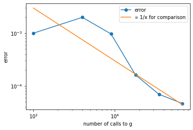

[1]:
!pip install numpy
!pip install matplotlib
!pip install qulacs
Requirement already satisfied: numpy in c:\users\koich\anaconda3\lib\site-packages (1.20.3)
WARNING: You are using pip version 21.3.1; however, version 23.2.1 is available.
You should consider upgrading via the 'c:\users\koich\anaconda3\python.exe -m pip install --upgrade pip' command.
Requirement already satisfied: matplotlib in c:\users\koich\anaconda3\lib\site-packages (3.3.2)
Requirement already satisfied: certifi>=2020.06.20 in c:\users\koich\anaconda3\lib\site-packages (from matplotlib) (2021.10.8)
Requirement already satisfied: kiwisolver>=1.0.1 in c:\users\koich\anaconda3\lib\site-packages (from matplotlib) (1.3.0)
WARNING: You are using pip version 21.3.1; however, version 23.2.1 is available.
You should consider upgrading via the 'c:\users\koich\anaconda3\python.exe -m pip install --upgrade pip' command.
Requirement already satisfied: pyparsing!=2.0.4,!=2.1.2,!=2.1.6,>=2.0.3 in c:\users\koich\anaconda3\lib\site-packages (from matplotlib) (2.4.7)
Requirement already satisfied: numpy>=1.15 in c:\users\koich\anaconda3\lib\site-packages (from matplotlib) (1.20.3)
Requirement already satisfied: pillow>=6.2.0 in c:\users\koich\anaconda3\lib\site-packages (from matplotlib) (9.0.1)
Requirement already satisfied: cycler>=0.10 in c:\users\koich\anaconda3\lib\site-packages (from matplotlib) (0.10.0)
Requirement already satisfied: python-dateutil>=2.1 in c:\users\koich\anaconda3\lib\site-packages (from matplotlib) (2.8.1)
Requirement already satisfied: six in c:\users\koich\anaconda3\lib\site-packages (from cycler>=0.10->matplotlib) (1.15.0)
Requirement already satisfied: qulacs in c:\users\koich\anaconda3\lib\site-packages (0.6.1)
Requirement already satisfied: scipy in c:\users\koich\anaconda3\lib\site-packages (from qulacs) (1.9.2)
Requirement already satisfied: numpy in c:\users\koich\anaconda3\lib\site-packages (from qulacs) (1.20.3)
WARNING: You are using pip version 21.3.1; however, version 23.2.1 is available.
You should consider upgrading via the 'c:\users\koich\anaconda3\python.exe -m pip install --upgrade pip' command.
[2]:
import numpy as np
import itertools as it
import matplotlib.pyplot as plt
from qulacs import QuantumState, QuantumCircuit, Observable
from qulacs.gate import Z, RY, merge, DenseMatrix, Identity
from Adder import add_adder_gate
from Subtracter import add_subtracter_gate
from ConstSetter import add_const_setter_gate, add_ctrl_const_setter_gate
QAE を用いたデジタルオプションプライシング#
[3]:
np.random.seed(1) #乱数のseedを設定
[4]:
# 時点数
numTimeStep = 2
# 各時点での原資産価格の上昇・下落確率を表すqubitのインデックス
pIds = [0, 1]
# 上昇確率
pUps = [0.4, 0.4]
# 上昇・下落幅
deltaUdl = 1
# デジタルオプションの閾値
th = 4
# 原資産価格初期値
udlIni = 2
[5]:
# 計算に要する桁数
digit = 3
# 原資産価格を保持するレジスタのqubitのインデックス
# digitに加え一桁余分に確保しておく（last qubitがQAEのターゲットになる）
udlResIdStart = pIds[-1] + 1
udlResIdEnd = udlResIdStart + digit
udlResIds = list(range(udlResIdStart, udlResIdEnd + 1))
qaeTargetId = udlResIdEnd
# 原資産価格レジスタに加える値を一時的に保持するレジスタ
tempResIdStart = udlResIdEnd + 1
tempResIdEnd = tempResIdStart + digit - 1
tempResIds = list(range(tempResIdStart, tempResIdEnd + 1))
# 繰り上がり用レジスタ
carryResIdStart = tempResIdEnd + 1
carryResIdEnd = carryResIdStart + digit - 1
carryResIds = list(range(carryResIdStart, carryResIdEnd + 1))
# 総qubit数
totQubitNum = carryResIdEnd + 1
# 全qubit index
idsAll = list(range(totQubitNum))
[6]:
### 原資産価格を計算し、閾値以上か否かを判定する回路を、QuantumCircuit gとして構成していく
g = QuantumCircuit(totQubitNum)
### 原資産価格初期値をセット
add_const_setter_gate(g, udlIni, udlResIds)
### 上昇・下落確率を指定のqubitの|1>のamplitudeとして埋め込み
for i in range(numTimeStep):
pGate_i = 問１# 注：時点t=1,2での上昇・下落確率を示す量子ビットのインデックスはpIds[0],pIds[1]
g.add_gate(pGate_i)
### 原資産価格の増減をtemporary registerにセットし、原資産価格レジスタに足す
for i in range(numTimeStep):
# 上昇の場合
add_ctrl_const_setter_gate(g, deltaUdl, pIds[i], tempResIds, True) # 上昇額をtemporary registerにセット
add_adder_gate(g, tempResIds, udlResIds, carryResIds) # 原資産価格レジスタに加える
add_ctrl_const_setter_gate(g, deltaUdl, pIds[i], tempResIds, True) # temporary registerをリセット
# 下落の場合
add_ctrl_const_setter_gate(g, deltaUdl, pIds[i], tempResIds, False) # 下落額temporary registerにセット
add_subtracter_gate(g, tempResIds, udlResIds, carryResIds) # 原資産価格レジスタから減ずる
add_ctrl_const_setter_gate(g, deltaUdl, pIds[i], tempResIds, False) # temporary registerをリセット
### 原資産価格が閾値以上となっているか否かのチェック
# 閾値の2の補数（原資産価格レジスタにこれを足して最上位ビットが1となる⇔原資産価格が閾値以上）
twosComplTh = (th^(2 ** digit - 1)) + 1
add_const_setter_gate(g, twosComplTh, tempResIds) # temporary registerに閾値の2の補数をセット
add_adder_gate(g, tempResIds, udlResIds, carryResIds) # 閾値の2の補数を原資産価格レジスタに足す
[7]:
### gの逆回路
gInv = g.get_inverse()
[8]:
### QAEに必要なゲート
# QAE target qubitが|1>なら-1倍するゲート
# 即ち、当該qubitに対するZ gate
targetStateFlip = 問２ # 注：target qubitのインデックスはqaeTargetId
# |0...0>を-1倍するゲート
# DenseMatrixで生成
flipIfAll0 = DenseMatrix(idsAll, np.diag([-1 if i == 0 else 1 for i in range(2 ** totQubitNum)]))
# Grover operator
grover = QuantumCircuit(totQubitNum)
grover.add_gate(targetStateFlip)
grover.merge_circuit(gInv)
grover.add_gate(flipIfAll0)
grover.merge_circuit(g)
[9]:
### QAEの設定
mMax = 4 # Grover operatorを2^mMax回まで作用
groverNums = np.array([0] + [2 ** i for i in range(mMax + 1)]) # Grover operatorの作用回数(0, 2^1, 2^2,...)
nShot = 1000 # 1つの作用回数のパターンに対する観測回数
# 尤度関数の最大点候補（[0, 0.5]を100000等分して網羅探索）
numPoints = 100000
thetas = 0.5 / numPoints * np.array(range(numPoints + 1))
[10]:
### QAE
# オブサーバブルzTgtの定義（QAE target qubitのZ）
obs = Observable(totQubitNum)
obs.add_operator(1, 'Z ' + str(qaeTargetId))
# 状態の生成・初期化
state = QuantumState(totQubitNum)
state.set_zero_state()
# gを一回作用させた状態|Ψ>
# これのtarget qubitを測定して1を得る確率 ＝ 求めたい確率（「原資産価格≧閾値」となる確率）
g.update_quantum_state(state)
# Groverの作用回数を色々と変えたとき、それぞれの下で「1を得る回数」のサンプル値を格納するリスト
n1s = []
for i in range(len(groverNums)):
groverNumAdd = groverNums[0] if i == 0 else groverNums[i] - groverNums[i - 1] # 追加の作用回数
for j in range(groverNumAdd): grover.update_quantum_state(state) # その回数だけGrover operatorを作用
prob1 = 0.5 * (1.0 - obs.get_expectation_value(state)) # target qubitに1を得る確率
n1 = np.random.binomial(nShot, prob1) # 1を得る回数のサンプル値
n1s.append(n1)
[11]:
### 対数尤度関数の定義
def liklihood(theta, i): # i: Groverの作用回数m0,m1,...,miに対する試行を勘案
ret = 0.0
for j in range(i + 1):
pSq = np.sin((2.0 * groverNums[j] + 1) * np.pi * theta)
p = pSq * pSq
ret += n1s[j] * np.log(p) + (nShot - n1s[j]) * np.log(1.0 - p)
return ret
[12]:
### 各試行における最尤点
thetaMaxLiks = np.array([thetas[np.argmax([liklihood(th, i) for th in thetas])] for i in range(len(groverNums))])
### 各試行における求めたい確率の推定値
estimates = np.power(np.sin(thetaMaxLiks * np.pi), 2)
<ipython-input-11-964349f68839>:9: RuntimeWarning: divide by zero encountered in log
ret += n1s[j] * np.log(p) + (nShot - n1s[j]) * np.log(1.0 - p)
[13]:
### Groverの作用回数と誤差のグラフ
pTrue = 0.16 # 求めたい確率の真の値
errs = np.abs(np.array(estimates) - pTrue) # 推定値との真の値の乖離
gCallNums = list(it.accumulate((2 * groverNums + 1) * nShot)) # 回路gおよびその逆を呼んだ回数
plt.xlabel('number of calls to g')
plt.ylabel('error')
# 描画
ax = plt.gca()
ax.set_xscale('log')
ax.set_yscale('log')
plt.plot(gCallNums, errs, label="error", marker="o")
# 比較のためにy=1/xを書く
plt.plot(gCallNums, 3.0 / np.array(gCallNums), label="∝ 1/x for comparison")
ax.legend()
plt.show()
